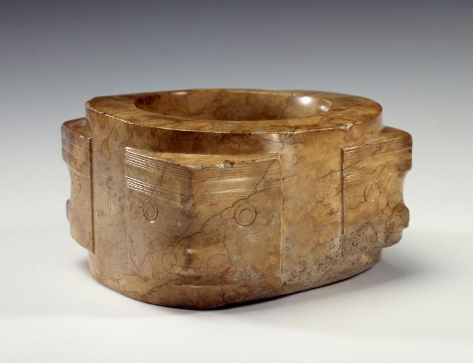
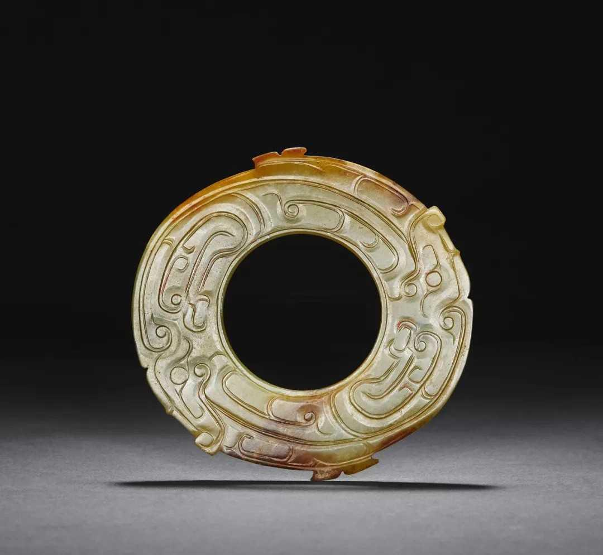
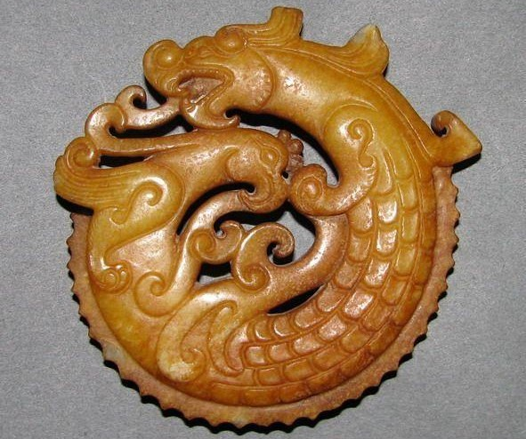
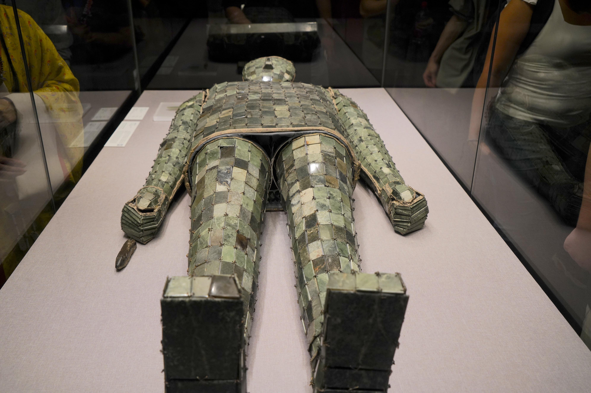
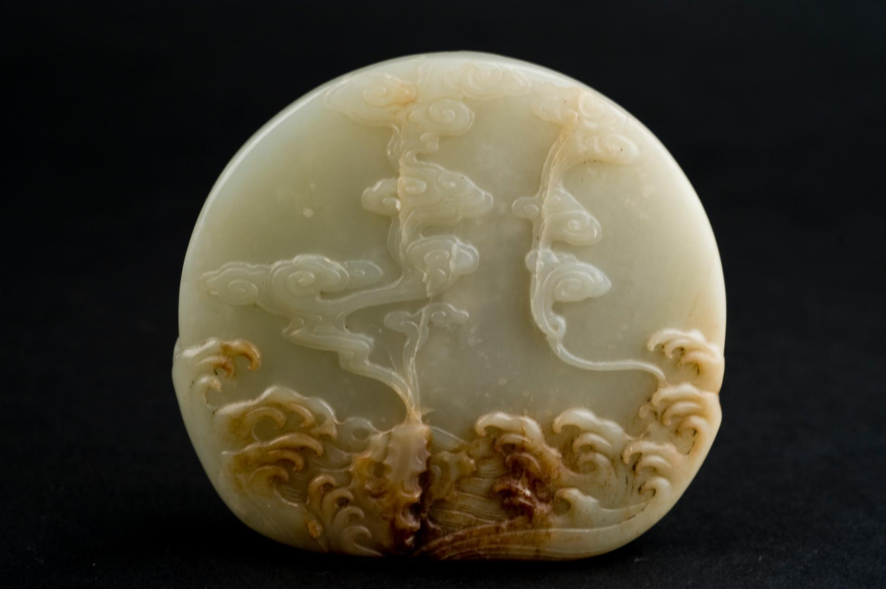
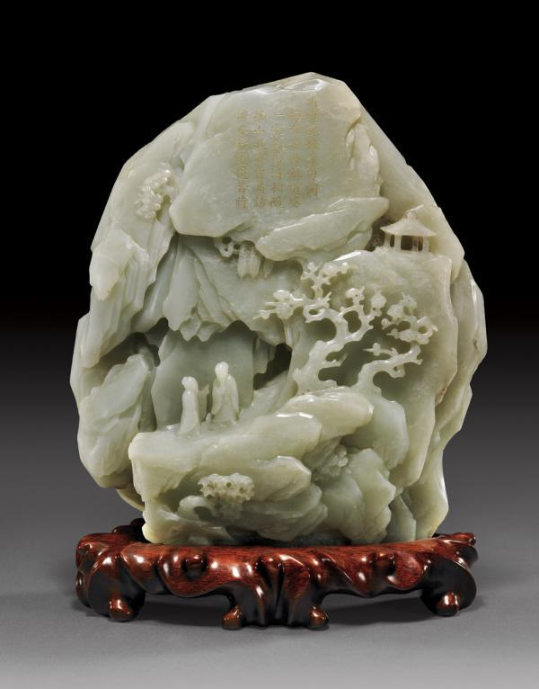

The Spirit of the East, Flowing Through Time

옥은 처음부터 장식이 아닌 “신성한 재료”였다.
하늘과 인간을 연결하는 매개체로 여겨졌으며
제사의 중심에 놓였다.

옥은 권력의 언어가 되었다.
예제(禮制) 속에서 신분을 구분하는 상징으로 사용되며
질서와 위계를 시각화했다.

옥은 도덕의 은유가 되었다.
유교 사상과 결합하며
“군자의 품격”을 설명하는 재료로 확장된다.

옥은 사후 세계로 이어졌다.
불로장생 사상과 결합해
생과 죽음을 연결하는 상징이 된다.

옥은 예술이 되었다.
문인 문화와 결합하며
자연을 닮은 조형 언어로 발전한다.

옥 공예는 정점에 도달한다.
기술과 미감이 결합하며
수집과 장식의 예술로 완성된다.